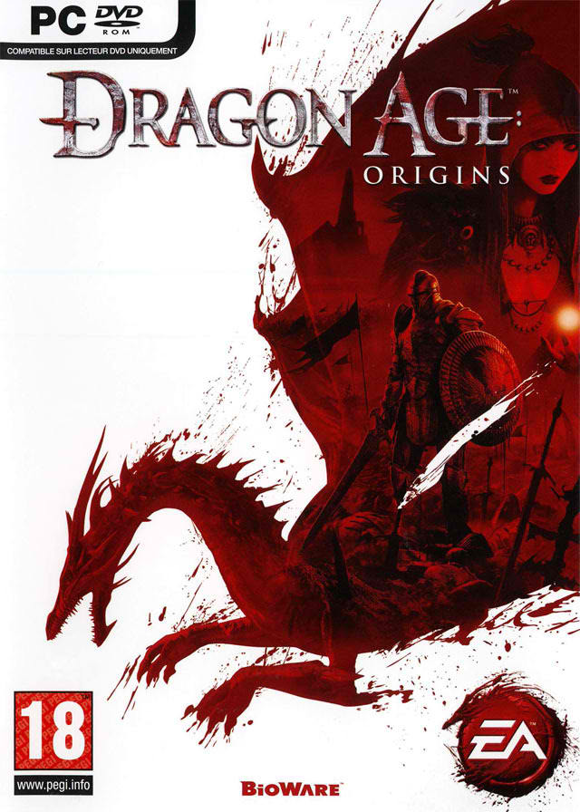
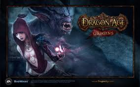
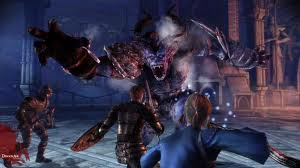
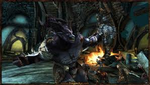
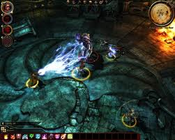

Overview:
Dragon Age: Origins is a third-person single-player role-playing video game developed by BioWare's Edmonton studio and published by Electronic Arts. It is the first game in the Dragon Age franchise.
The game was released for Microsoft Windows, PlayStation 3 and Xbox 360 on November 3, 2009, and for Mac OS X on December 21, 2009.
Set in the fictional kingdom of Ferelden during a period of civil strife, the player assumes the role of a warrior, mage or rogue coming from an elven, human, or dwarven background who must unite the kingdom to fight an impending invasion by demonic forces.
BioWare describes Dragon Age: Origins as a "dark heroic fantasy set in a unique world", and a spiritual successor to their Baldur's Gate series of games, which took place in the Forgotten Realms Campaign Setting of the Dungeons & Dragons franchise.
Upon its release, Dragon Age: Origins was lauded with overwhelmingly positive reviews and considered a critical success. Review aggregator site Metacritic ranks the PC, PlayStation 3, and Xbox 360 versions of the game with scores of 91, 87, and 86, respectively.
The game also received multiple awards from numerous outlets, ranging from IGN's "PC Game of The Year (2009)"[13] to the Academy of Interactive Arts & Sciences "Role-Playing/Massively Multiplayer Game of the Year 2009".


| System Requirements | |
|---|---|
| Minimun System Requirements |
Windows XP Minimum Specifications |
| Recommended System Requirements |
CPU: Intel Core 2 Quad 2.4Ghz Processor or equivalent |
|  |  |
|  |  |